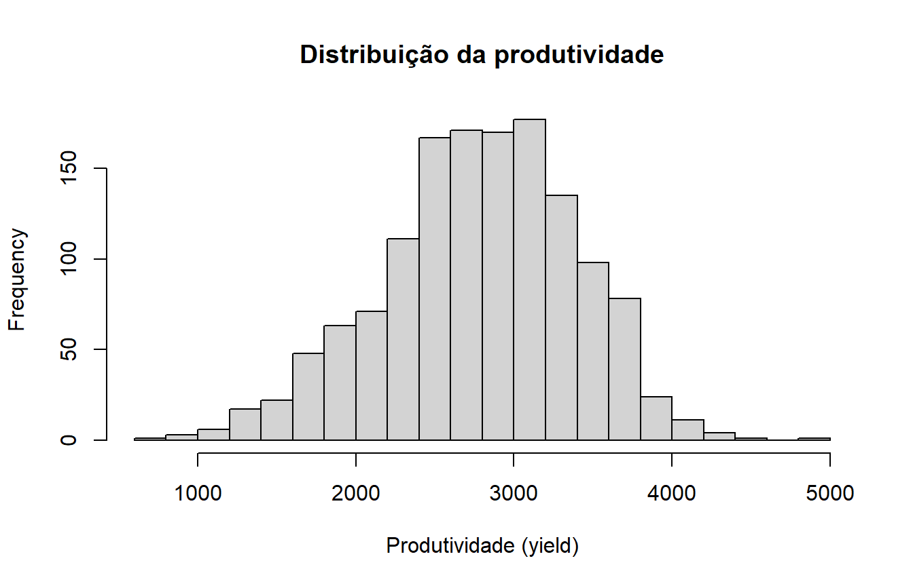

Last updated: 2026-08-11
Checks: 7 0
Knit directory:
genomic-prediction-data-augmentation/
This reproducible R Markdown analysis was created with workflowr (version 1.7.2). The Checks tab describes the reproducibility checks that were applied when the results were created. The Past versions tab lists the development history.
Great! Since the R Markdown file has been committed to the Git repository, you know the exact version of the code that produced these results.
Great job! The global environment was empty. Objects defined in the global environment can affect the analysis in your R Markdown file in unknown ways. For reproduciblity it’s best to always run the code in an empty environment.
The command set.seed(20260810) was run prior to running
the code in the R Markdown file. Setting a seed ensures that any results
that rely on randomness, e.g. subsampling or permutations, are
reproducible.
Great job! Recording the operating system, R version, and package versions is critical for reproducibility.
Nice! There were no cached chunks for this analysis, so you can be confident that you successfully produced the results during this run.
Great job! Using relative paths to the files within your workflowr project makes it easier to run your code on other machines.
Great! You are using Git for version control. Tracking code development and connecting the code version to the results is critical for reproducibility.
The results in this page were generated with repository version 94cb60b. See the Past versions tab to see a history of the changes made to the R Markdown and HTML files.
Note that you need to be careful to ensure that all relevant files for
the analysis have been committed to Git prior to generating the results
(you can use wflow_publish or
wflow_git_commit). workflowr only checks the R Markdown
file, but you know if there are other scripts or data files that it
depends on. Below is the status of the Git repository when the results
were generated:
Ignored files:
Ignored: .Rproj.user/
Ignored: ETA_1_varU.dat
Ignored: data/dados_gblup.csv
Ignored: mu.dat
Ignored: output/01_data_objects.rds
Ignored: output/02_splits_mestre_30rep.rds
Ignored: output/03_genomic_objects.rds
Ignored: output/checkpoints/06_da_progress.csv
Ignored: varE.dat
Untracked files:
Untracked: results/01_data_audit.csv
Untracked: results/02_splits_summary.csv
Untracked: results/06_da_equivalence_vs_T100.csv
Untracked: results/06_da_results.csv
Untracked: results/06_da_vs_same_real.csv
Note that any generated files, e.g. HTML, png, CSS, etc., are not included in this status report because it is ok for generated content to have uncommitted changes.
These are the previous versions of the repository in which changes were
made to the R Markdown (analysis/01_data_audit.Rmd) and
HTML (docs/01_data_audit.html) files. If you’ve configured
a remote Git repository (see ?wflow_git_remote), click on
the hyperlinks in the table below to view the files as they were in that
past version.
| File | Version | Author | Date | Message |
|---|---|---|---|---|
| Rmd | 2f4d2fd | Weverton Gomes da Costa | 2026-08-11 | Rewrite data audit as explicit tutorial module |
| Rmd | c1d600d | Weverton Gomes da Costa | 2026-08-10 | Add stage 1 data audit |
Antes de ajustar qualquer modelo de predição genômica, precisamos conhecer o arquivo analítico e verificar se sua estrutura corresponde ao que será usado no restante do tutorial.
Neste conjunto de dados:
yield contém o fenótipo de produtividade;0, 1 ou
2, correspondendo ao número de cópias do alelo contado
naquele marcador.A auditoria não modifica os dados. Ela apenas verifica a estrutura do arquivo e salva os objetos que serão usados na próxima etapa.
O arquivo analítico deve estar em
data/dados_gblup.csv.
DATA_FILE <- "data/dados_gblup.csv"
if (!file.exists(DATA_FILE)) {
stop(
"Arquivo não encontrado: ", DATA_FILE,
". Coloque dados_gblup.csv dentro da pasta data/."
)
}
dados <- read.csv(
DATA_FILE,
check.names = FALSE
)
dim(dados)[1] 1379 4326O projeto validado possui 1.379 indivíduos e 4.326 colunas: uma coluna fenotípica e 4.325 SNPs.
Primeiro separamos o nome da característica fenotípica dos nomes dos marcadores.
if (sum(names(dados) == "yield") != 1) {
stop("O arquivo deve possuir exatamente uma coluna chamada yield.")
}
if (anyDuplicated(names(dados)) > 0) {
stop("Existem nomes de colunas duplicados.")
}
marker_names <- setdiff(
names(dados),
"yield"
)
length(marker_names)[1] 4325Os nomes dos SNPs seguem o padrão adotado no arquivo analítico, por
exemplo Gm01_..._A_G.
pattern_snp <- "^Gm[0-9]{2}_[0-9]+_[ACGT]_[ACGT]$"
if (!all(grepl(pattern_snp, marker_names))) {
stop("Há marcadores com nomes fora do padrão esperado.")
}A matriz M contém apenas os SNPs. O vetor y
contém a produtividade.
M <- as.matrix(
dados[, marker_names, drop = FALSE]
)
storage.mode(M) <- "numeric"
y <- as.numeric(
dados$yield
)
dim(M)[1] 1379 4325length(y)[1] 1379Os modelos deste tutorial utilizam o arquivo analítico já filtrado. Por isso, não esperamos valores ausentes nos SNPs nem no fenótipo.
Também verificamos se todos os genótipos estão codificados como
0, 1 ou 2.
auditoria_valores <- data.frame(
Verificacao = c(
"Fenótipos ausentes",
"Genótipos ausentes",
"Valores SNP fora de 0/1/2"
),
Valor = c(
sum(is.na(y)),
sum(is.na(M)),
sum(!(M %in% c(0, 1, 2)))
)
)
knitr::kable(
auditoria_valores,
caption = "Verificações básicas do arquivo analítico"
)| Verificacao | Valor |
|---|---|
| Fenótipos ausentes | 0 |
| Genótipos ausentes | 0 |
| Valores SNP fora de 0/1/2 | 0 |
if (anyNA(y)) stop("Existem fenótipos ausentes no arquivo analítico.")
if (anyNA(M)) stop("Existem SNPs ausentes no arquivo analítico.")
if (!all(M %in% c(0, 1, 2))) stop("Os SNPs devem estar codificados como 0, 1 ou 2.")Um marcador monomórfico apresenta o mesmo valor para todos os indivíduos e não contribui para diferenciar geneticamente a população. Também verificamos se há linhas ou perfis genômicos exatamente duplicados.
n_classes <- integer(ncol(M))
for (j in seq_len(ncol(M))) {
n_classes[j] <- length(
unique(M[, j])
)
}
n_monomorficos <- sum(n_classes <= 1)
n_linhas_duplicadas <- sum(duplicated(dados))
n_perfis_duplicados <- sum(
duplicated(
as.data.frame(M)
)
)
auditoria_estrutura <- data.frame(
Verificacao = c(
"Indivíduos",
"SNPs",
"Marcadores monomórficos",
"Linhas duplicadas",
"Perfis genômicos duplicados"
),
Valor = c(
nrow(M),
ncol(M),
n_monomorficos,
n_linhas_duplicadas,
n_perfis_duplicados
)
)
knitr::kable(
auditoria_estrutura,
caption = "Estrutura validada dos dados"
)| Verificacao | Valor |
|---|---|
| Indivíduos | 1379 |
| SNPs | 4325 |
| Marcadores monomórficos | 0 |
| Linhas duplicadas | 0 |
| Perfis genômicos duplicados | 0 |
stopifnot(nrow(M) == 1379)
stopifnot(ncol(M) == 4325)
stopifnot(n_monomorficos == 0)
stopifnot(n_linhas_duplicadas == 0)
stopifnot(n_perfis_duplicados == 0)O resumo abaixo permite conhecer a escala da produtividade antes da modelagem.
resumo_yield <- data.frame(
N = length(y),
Media = mean(y),
Desvio_padrao = sd(y),
Minimo = min(y),
Q1 = unname(quantile(y, 0.25)),
Mediana = median(y),
Q3 = unname(quantile(y, 0.75)),
Maximo = max(y)
)
knitr::kable(
resumo_yield,
digits = 2,
caption = "Resumo da produtividade"
)| N | Media | Desvio_padrao | Minimo | Q1 | Mediana | Q3 | Maximo |
|---|---|---|---|---|---|---|---|
| 1379 | 2780.96 | 614.62 | 670 | 2405.5 | 2816 | 3208 | 4978 |
hist(
y,
breaks = 30,
xlab = "Produtividade (yield)",
main = "Distribuição da produtividade"
)
Não precisamos reler e reorganizar o CSV em todos os módulos.
Salvamos apenas o objeto já auditado em
output/01_data_objects.rds.
data_objects <- list(
y = y,
M = M,
n = nrow(M),
m = ncol(M),
marker_names = marker_names
)
saveRDS(
data_objects,
"output/01_data_objects.rds"
)Na próxima etapa, esse objeto será usado para separar aleatoriamente os indivíduos de treinamento e validação.
sessionInfo()R version 4.5.1 (2025-06-13 ucrt)
Platform: x86_64-w64-mingw32/x64
Running under: Windows 11 x64 (build 26200)
Matrix products: default
LAPACK version 3.12.1
locale:
[1] LC_COLLATE=Portuguese_Brazil.utf8 LC_CTYPE=Portuguese_Brazil.utf8
[3] LC_MONETARY=Portuguese_Brazil.utf8 LC_NUMERIC=C
[5] LC_TIME=Portuguese_Brazil.utf8
time zone: America/Sao_Paulo
tzcode source: internal
attached base packages:
[1] stats graphics grDevices utils datasets methods base
loaded via a namespace (and not attached):
[1] vctrs_0.7.1 cli_3.6.5 knitr_1.50 rlang_1.1.7
[5] xfun_0.54 stringi_1.8.7 otel_0.2.0 promises_1.5.0
[9] jsonlite_2.0.0 workflowr_1.7.2 glue_1.8.0 rprojroot_2.1.1
[13] git2r_0.36.2 htmltools_0.5.9 httpuv_1.6.16 sass_0.4.10
[17] rmarkdown_2.30 evaluate_1.0.5 jquerylib_0.1.4 tibble_3.3.1
[21] fastmap_1.2.0 yaml_2.3.12 lifecycle_1.0.5 whisker_0.4.1
[25] stringr_1.6.0 compiler_4.5.1 fs_1.6.6 Rcpp_1.1.1
[29] pkgconfig_2.0.3 rstudioapi_0.17.1 later_1.4.4 digest_0.6.39
[33] R6_2.6.1 pillar_1.11.1 magrittr_2.0.4 bslib_0.9.0
[37] tools_4.5.1 cachem_1.1.0